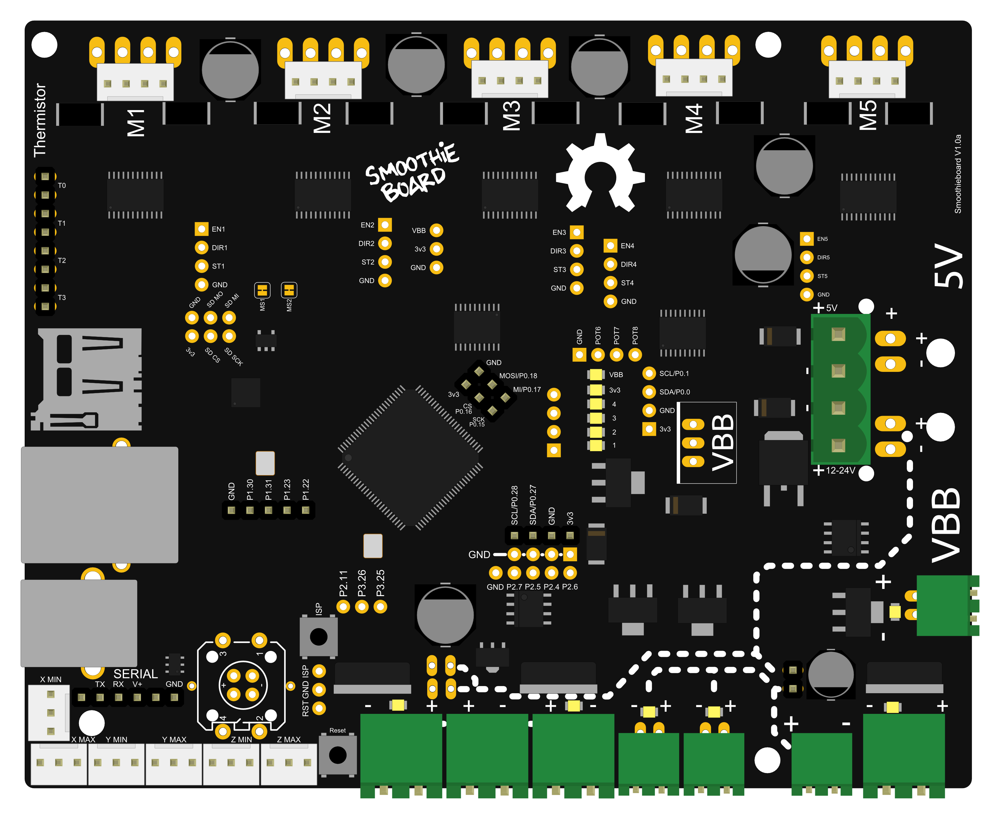

Your guide to installing Smoothieboard in a 3D printer
Probably the machine for which Smoothie is most used, due to Smoothie's roots in the RepRap project, 3D printers are fairly simple to Smoothiefy.
This is a step-by-step guide to connecting your board to the various components of the 3D printer, configuring everything, from the beginning to actual printing.
This guide is a community effort, and this page is a Wiki. Please don't hesitate to edit it to fix mistakes and add information, any help is very welcome.
|
Table of Contents
|

Unboxing
Your Smoothieboard comes with a microSD card in the microSD slot.
The boards come pre-flashed. With a basic configuration file installed on the SD card, no preparation is needed before you can connect Smoothieboard to your computer and start interacting with it.
A good first step is to connect your board to your computer to familiarize yourself with it. Connect a USB-B cable to the USB connector on the board, and to your computer.

A moment after connection, your computer will recognize the Smoothieboard as a USB Mass Storage Device (like a USB disk-drive or a SD card reader), showing you the files present on the SD card. Drivers are needed for Windows 7/8, while Linux and Mac OS X directly support the device, you can find those drivers here.
This allows you to add, copy, edit or delete any file you'd like. Already present on the SD card is a file named "config". This file contains all of the configuration options for your board and is read when you start or reset your board. You edit the configuration simply by editing this file in a Text Editor, saving it and resetting the board. No need to recompile or flash the board.
The SD card can also be used to flash a more recent version of the firmware to your board, see where to get the binary file and how to flash it via the SD card.
It can also be used to store and play G-Code files, see Player.
USB Mass Storage is not the only thing you get when you connect the board. The board also exposes a USB CDC Serial interface, allowing you to send G-Code and receive answers. (There is also a DFU interface for flashing firmwares but that's mostly for developers).
The CDC (Serial) interface is the interface host programs like Pronterface use to allow you to interact with your machine. If you are already familiar with it, you can try connecting right now and get an answer from the board. If not, we explain it all later in this guide.
Warnings
Before you start wiring your machine's elements to the board, there are several things you need to keep in mind and be careful about during all of the assembly.
Make sure you read this. Seriously.

Polarity
Always make sure the polarity is correct when wiring in power inputs (coming from the Power Supply). Reversed polarity can damage or destroy all or part of your board. Polarity is indicated on the board itself by the + and - signs. Double check. On older versions of the board, markings are partially hidden by the connector, making it confusing. Rely on only the diagrams.
To check the polarity of your power source, attach your multimeter probes to the two wires of your power source respectively. If the voltmeter reading is positive it implies that the red probe is connected to the positive wire (+) and the black probe to the negative wire (-).
The main (labeled VBB) power input has a reverse polarity protection, however, it will not hold forever. As soon as you notice something is wrong, turn the power supply off and check again.
Disconnecting
Never disconnect or connect stepper motors from the stepper motor drivers while the board is powered (i.e., when the Power Supply is turned on).
{kind=link}
The drivers have very good protection against most possible problems and are very hard to destroy accidentally. But it is possible.
Shorts
Be careful that nothing metallic ever touches the board while it is powered on. Falling screwdrivers, nuts and bolts can cause shorts and destroy the board.
Check the board before powering it on.
Do not press the reset button with anything metallic, as you could slip and cause a short, use a plastic screwdriver or the like.
Use the right connector
Always check the schematic before connecting power sources (coming from the Power Supply) to the board. Connected to the wrong connector can destroy components. A common example of this problem is plugging a power input cable, into the connector for an output, or plugging the limit switches in backwards.
Crimping
Make absolutely sure of your connections using crimps or screw terminals, from wires to any type of connector, are very careful and well done. Connections (to the stepper motors for example) lost while the machine is running can destroy your board.
Markings
In the case of the VBB power input, be careful. If your board came with connectors pre-soldered, the 5mm connector is present, and the polarity of that connector is that of the large traces in the wiring diagram to the right (red is +, blue is -). On some boards, the marking on the boards may be hidden by the connector itself, so for VBB, do not rely on the markings on the board, but on the diagrams on this page. However, if you did not get your connectors soldered, and want to solder a 3.5mm connector instead of a 5mm connector, also note that the polarity is the opposite.
USB v Ethernet
USB can, in some setups, be subject to interference, which causes disconnections, and can ruin your work. This is very hard to prevent if it happens even in normal conditions. Ethernet, on the other hand, does not have this problem: save yourself the trouble, and use Ethernet right away. It's very nice. See Network for information on how to set it up.
Destroying your board
If you receive a bad board, you will get a replacement. But if you destroy your own board, your only options will be to fix it yourself (which can be quite difficult), or get a new one.
This is why it is very important you make sure you do not destroy your own board. Smoothieboard is reasonably protected, but there are still things that will destroy it. The general idea is: if a part of the board gets too much power, it will get destroyed. Here are some common mistake users do that cause the board to get too much power and die:
- Plugging 12-24v (motor power) into anything you are not supposed to. Like the 5V line, or an end-stop or thermistor input for example. Problems with the 5V or 3.3V power are not as much of a problem as the board is 5V-tolerant, so wrong connections and shorts should be okay as long as they do not last too long.
- Shorting 12-24v to anything else, which is essentially the same as plugging it into a place you are not supposed to (see above). This can happen by dropping a metal object onto the board, bad soldering, loose wires, un-protected wires, etc …
- Using an inductive load (like a motor, fan or solenoid) on a MOSFET, without a diode across (see Fan documentation).
The general idea here is: always make sure everything is clean, and double-check everything before turning the power on. You can not learn by making mistakes here, as mistakes will likely cost you your board.
Electrostatic discharge can also destroy your board : make sure you properly ground everything.
For a good read about safety, you can refer to the RepRap Wiki documentation on the subject

Main Power Input
Without power, your board can not do much. The board uses power to move stepper motors, and power heating elements, fans, and others.
How to choose a power supply unit (PSU) :- Voltage (V)
- Can be from 12 to 24V. While most of the components on the Smoothieboard are rated up to 32V, it is not recommended or supported to use that voltage. 12V PSUs are more common, and generally cheaper. However, the higher the voltage, the more you will get out of your stepper motors. This is the reason some designers use 24V PSUs. However, be careful that with a 24V PSU, you will need 24V fans, and will need to reduce the PWM setting for your heating elements.
Setup
Make sure you use a Regulated Power Supply, make sure you connect the ground wire for the mains to the power supply, and if it has a fan, make sure it has sufficient space around it to let air flow and cool it appropriately.
To wire the power supply unit to mains (wall AC power), make sure you connect the right colored wires to the right connectors on the PSU. The 3 connectors are "live", "neutral" and "ground". Color changes from cable to cable, you can find charts for your specific country/cable on the internet, but the following colors are the most common:
- US: Black = Load/Live, White = Neutral, Green = Earth
- Europe: Brown = Load/Live, light Blue = Neutral, Yellow/Green = Earth
Once the wires connected to the PSU, make sure none of your computers is doing something important (like a system upgrade). In case something goes wrong, plug the PSU into a power strip with an on/off button. Then turn that button ON. If your house loses power, you did something wrong. If an LED illuminates on the PSU, everything is fine: unplug the PSU and continue.
Don't die
NEVER manipulate mains (220/110V) power wires while they are plugged into the wall plug. Unpleasantness and/or death are common consequences of not respecting this rule.
{kind=link}
Ground your printer's frame by connecting it to the Earth terminal on your power supply. In the (unlikely) event that a power supply wire comes undone and touches the printer's frame, this will prevent you from getting an unpleasant and/or deadly shock.
5V
Your board needs two sorts of power to work : 12-24V power to turn motors, heat hotends, etc, and 5V power to power the microcontroller ( the brain ).
There are three ways to provide 5V power to the board :
- By plugging a USB cable in, USB cables provide 5V
- By soldering a voltageregulator to the board ( and providing 12+24V, which the voltage regulator then turns into 5V )
- By providing 5V directly to the 5V power input ( next to the VBB power input )
Now that the PSU is getting mains power, your PSU is converting it into 12 or 24V power. You need to connect wires from it to the Smoothieboard to provide power.
The most important thing is to respect polarity : + goes to +, - goes to -. On the PSU, + terminals are indicated as +, V+, 12V+ or 24V+. Ground (-) terminals are indicated as -, V-, COM or GND.
On the Smoothieboard they are indicated simply as + and -.

By convention, black (sometimes brown) wires are used for ground, and red (sometimes orange, white or yellow) wires are used for power connections.
Once the wires are correctly connected, you can turn the PSU ON. If everything was done correctly, the red LED (marked VBB) on the Smoothieboard will light up brightly.
Be careful
If it does not, immediately turn the PSU off.
Check polarity, and check all the connections are strong and properly done.
When you turn the PSU on, make sure you are ready to immediately turn it back off.
Now that the board has power, you can use that power to move things!
Emergency stop
It is recommended you setup an emergency stop button on your machine, so that in case of a problem, you can easily and quickly turn the machine off. For information on how to do this, please read EmergencyStop.
Stepper Motors
A bit of theory :
« A stepper motor (or step motor) is a brushless DC electric motor that divides a full rotation of the motor into a number of equal steps. The motor's position can then be commanded to move and hold at one of these steps without any feedback sensor (an open-loop controller). » (Wikipedia)
Because they work by steps, and you can accurately control how many steps you move in each direction, stepper motors are a very practical way of moving things to a desired position. This makes them great for most CNC applications.
Smoothie comes with stepper motor drivers designed for bipolar stepper motors, with a maximum current rating of 2 Amps.

Wiring
Direct wiring
Bipolar stepper motors have two poles (bi-polar). Each pole is connected to two wires. That's 4 wires coming out of your stepper motor. These have to be connected to your Smoothieboard.
Each stepper motor driver on the Smoothieboard has 4 connections to that effect. (Stepper motor drivers are labeled M1, M2 etc …)
The tricky thing is often to find out which wires connect to which poles. If you just wire things at random, you have a chance it will work, but let's be scientific about it. Several methods:
Now to connect the wires to the Smoothieboard. Let's call one coil A, and the other coil B. It doesn't matter which is which. Polarity also doesn't matter, all it changes is the direction the motor turns, and you can change that in the configuration file. Now simply connect your two wires to the Smoothieboard's 4 pins for that stepper motor driver as such : AABB or BBAA. Other combinations like ABBA or ABAB will not work.

Once your stepper motor is properly connected to your Smoothieboard, it is ready to be controlled.

Wiring a stepper motor to a stepper motor driver.
In this example, a stepper motor is connected to the M1 driver, and power is provided to VBB ( the main power input ).
External Stepper driver
If you want to use larger stepper motors than the Smoothieboard's drivers can handle ( 2A max ), you need to use external stepper drivers.
You can find detailed information on how to wire an external stepper motor driver to a Smoothieboard in the External driver appendix.

Configuring
Example configurations are available in github https://github.com/Smoothieware/Smoothieware/tree/edge/ConfigSamples.
You can also refer to the Configuration documentation.
Current
The first thing you have to do is tell the stepper motor drivers what is the current rating for your stepper motors is. To drive the stepper motor correctly, the driver has to know the motor's current rating.
Each stepper motor model has a precise current rating. You can drive your stepper motor at a lower current, which will make it more silent, but also less powerful. But you can not drive the motor at a higher current than it is rated at. This would cause overheating, and possibly skipped steps.
The rating is often written on your stepper motor's label ( see picture on the right ). If it is not, you can get it by googling the stepper motor model number, or by contacting your seller or manufacturer.
Once you have the correct rating, you can set the corresponding parametr in the configuration file.
Smoothie has a funny way of naming stepper motor drivers. Instead of naming them X, Y or Z, because this makes no sense in non-cartesian robots like delta robots, we name the drivers using Greek letters so they are arm application agnostic :
| Label on the Smoothieboard | M1 | M2 | M3 | M4 | M5 |
|---|---|---|---|---|---|
| Axis in a Cartesian machine | X (left-right) | Y (front-back) | Z (up-down) | E0 : First extruder | E1 : Second extruder |
| Greek letter | α (alpha) | β (beta) | γ (gamma) | δ (delta) | ε (epsilon) |
| Current setting configuration option | alpha_current | beta_current | gamma_current | delta_current | epsilon_current |
Now, as described in the "Unboxing" paragraph, connect the board to your computer, open the "config" file with a text editor, and change the configuration value for each stepper motor driver to the correct value.
For example, if your alpha stepper motor has a current rating of 1.68A, edit the corresponding line to read :
alpha_current 1.68 # X stepper motor current
Do this for each stepper motor you have to connect to the board. (If you have a Cartesian robot, see which motor connects to which stepper driver in the array above. If you use another type of arm solution, see the specific documentation.)

Steps per millimeter
A stepper motor driver operates in steps. It moves a certain number of steps in one direction, then a certain number of steps in another. You think in millimetres. You want your machine to go to a certain position in millimetres, then another position in millimetres.
You need Smoothieboard to convert the millimetres you ask of it, into steps the stepper motor driver understands.
That conversion depends on your exact arm solution. The most common, and the simplest, is the Cartesian arm solution, and it is the one we will focus on here. Documentation for other arm solutions can be found separately.
In the case of a Cartesian arm solution, you simply convert a certain number of millimeters to a certain numbers of steps. That is the steps_per_millimeter configuration option that you have to set for each stepper motor.
To compute it, you must multiply a certain number of factors.
- The object you move moves a certain number of millimetres for each rotation of the stepper motor. (This depends on the characteristics of the belt/pulley, or lead-screw system you are using.)
- The stepper motor moves a certain number of full steps per rotation. That is usually 200. (But it can be 400.)
- Each step is divided by the stepper motor driver in a certain number of microsteps. It is that number, and not the number of full steps, that we want. Smoothie always divides steps into 16 microsteps.
The formula is as follows :
$\text{(micro) steps per millimeter} = ( \text{full steps per rotation} * \text{microsteps per step} ) / \text{millimeters per rotation}$
To help you, there is an awesome calculator by the awesome Josef Prusa: http://calculator.josefprusa.cz/
Once you know the correct value for a given stepper motor driver, set it in the config file.:
alpha_steps_per_mm 80 # Steps per mm for alpha stepper
Do this for each stepper motor driver.
In the case of your extruder stepper motor, the principle is the same, but the value is extruder_steps_per_mm.

Direction
It is now time to test your stepper motors. For this you will need to use host software like Pronterface or the web interface.
Now connect to your Smoothieboard over the serial interface. Power your machine on by plugging the PSU into the wall.
Now you need to move an axis to make sure the stepper motor is turning in the right direction. In Pronterface, click near the yellow arrow marked "+X".
Your X axis will move. If it moved to the right, great! Everything is fine, and you have nothing to change. If it moved to the left, you need to invert the direction of that axis.
You do this by editing the configuration file, and inverting the direction pin for that stepper motor driver :
alpha_dir_pin 0.5 # Pin for alpha stepper direction
Becomes :
alpha_dir_pin 0.5! # Pin for alpha stepper direction
This is for your axes. In the case of your extruder, the config value is extruder_dir_pin.
Save the config file, reset the Smoothieboard, connect again using Pronterface. Now the axis will move in the right direction.
Do this for each axis.
Moving bed
If you have a moving bed in the Y axis for example, as opposed to a moving tool, be careful : what matters is the direction of the head relative to the bed, not the direction of the bed relative to the machine. It's very common to get confused and invert your Y axis on moving bed machines (or not invert it when it should be). Basically, if an asymmetrical object looks like the model when it is printed, then your Y axis is correct, otherwise you need to change your configuration.

Temperature control
In a 3D printer, you heat thermoplastics. There are two different parts in which you want to do that. First the hot-end heats the plastic to the point where it is liquid enough to go through the nozzle. Second, the heated bed (in only some printers), on which the first layer is deposited, is heated to allow for better sticking of the plastic to the bed, and more uniform temperature in the part while printing.
For detailed information about temperature control in Smoothie, you can look at this part of the documentation: TemperatureControl
The process is essentially the same to wire and control a hot-end, or a heated bed, and is as follows :

Thermistor
A thermistor's resistance changes with temperature. By reading that resistance, we can determine the temperature of a hot-end or a heated bed.
This allows Smoothie to turn the heater on or off depending on the temperature it reads, to achieve the desired temperature.

Wiring a thermistor.
To wire the thermistor, take the two wires from the thermistor on your hot-end or heated bed, and connect them to one of the pairs of thermistor inputs on the Smoothieboard. Each input is two pins, one for each thermistor wire. There is no polarity to respect.
Smoothieboard has 4 thermistor inputs total, meaning a line of 8 pins on the edge of the board. Polarity is not important for thermistors.
By convention (meaning that if you wire things according to the way it is specified in the default configuration file, you do not need to edit the configuration file as it will already be correct),
- Hot-end thermistor connects to T0
- Heated bed thermistor connects to T1
In the default configuration file, the thermistor pins are set up using that convention :
temperature_control.hotend.thermistor_pin 0.23 # Pin for the thermistor to read (here T0)
temperature_control.bed.thermistor_pin 0.24 # Pin for the heated bed to read (here T1)
You can, however, use any thermistor pin you want for any temperaturecontrol module you want.

There are different models of thermistors. Each hotend or heated bed has one, and it's a specific given type. Different thermistor models translate a given temperature into different resistances. This means you must tell Smoothie which exact thermistor model you have, to be sure Smoothie can read it correctly.
This is done using the thermistor option in the configuration file. You pass it the name of your thermistor, and it will configure the math correctly accordingly.
temperature_control.hotend.thermistor EPCOS100K
Smoothie does not know the name of all the thermistors in existence. At the moment these are the ones it knows about:
| Name | Beta for 0-80°C | Beta for 185-230°C | I for Steinhart Hart | J for Steinhart Hart | K for Steinhart Hart | Part number |
|---|---|---|---|---|---|---|
| EPCOS100K | 4066 | 4193 | 0.000722378300319346F | 0.000216301852054578F | 9.2641025635702e-08F | B57540G0104F000 |
| Honeywell100K | 3974 | 4385 | 0.000596153185928425F | 0.000231333192738335F | 6.19534004306738e-08F | 135-104LAG-J01 |
| Semitec | 4267 | 4375 | 0.000811290160145459F | 0.000211355789144265F | 7.17614730463848e-08F | 104GT-2 |
| Honeywell-QAD | 0.000827339299500986F | 0.000208786427208899F | 8.05595282332277e-08F | 135-104QAD-J01 | ||
| RRRF100K | 3960 | |||||
| RRRF10K | 3964 | |||||
| HT100K | 3990 |
In case you have a thermistor that is not known to Smoothie you can simply define the parameters in config. There are two methods, using the beta value ( good but not perfect ), and using the Steinhart Hart algorythm ( perfect ).
Using beta values :
Set the beta value in the configuration file :
temperature_control.hotend.beta 4066 # set beta for thermistor
About beta values
The betas published by most manufacturers, are for the 0-80°C range.
For the 185-230°C this results in readings being about 7-10°C too high.
This means beta values are usually good for a heated bed, but not for a hotend.
If the thermistor is 100K ohms at 25°C then this is usually enough.
You can also set r0,t0,r1,r2 but this is not usually needed as the defaults are sufficient.
If you do not know what thermistor model you have, contact the designer or seller of your 3D printer, hotend or heated bed and get the spec which will tell you what the beta value is for the thermistor.
Using the Steinhart Hart algorythm :
This is the recommended method. Set the parameters in the configuration file :
temperature_control.hotend.coefficients 0.000722376862540841,0.000216302098124288,0.000000092640163984
To find what the Steinhart Hart coefficients for a given thermistor are, please read the SteinhartHart page.
If you have the temperature curve for your thermistor, you can also define three points on that curve, and let Smoothie calculate everything :
temperature_control.hotend.rt_curve 20.0,126800,150,1360,240,206.5

Heating element
Now that Smoothie can read the temperature, it needs a way to heat things and maintain a desired temperature. This is the heating element. On a hot-end, that is usually a resistor or a cartridge heater, on a heated bed, that is usually a PCB plate designed to have the right resistance, or a kapton heated bed.
Because of its resistance, when power is applied to a heater, the heater consumes energy to generate heat.
These heating elements need to be connected to Smoothieboard on a port that allows Smoothie to turn them ON or OFF as needed. This is done by the use of MOSFET that takes a digital input signal, and, depending on its value, lets current pass or not.
Smoothie has up to 6 MOSFET controls ( 6 on 5X, 4 on 4X and 2 on 3X ). You have to connect your PSU to the power input connector for those FETs, and connect your power consuming element ( be it heating element, spindle, etc… ) to the power outputs of those same FETs. Essentially Smoothie connects/disconnects the element ( connected to the mosfet connector ) from the PSU ( connected to the power input connector ) as needed to maintain temperature or as requested by G-codes.
There are three main pairs of Mosfets on the board :
- Big MOSFETS pair : Their outputs are labelled P2_7 and P2_5 on the schematic, the input connector for them is found between them. They are found on the 4X and 5X boards.
- Small MOSFETS pair : Their outputs are labelled P2_6 and P2_4 on the schematic, the input connector for them is found by their side, between P2_6 and P1_23. They are found on all of the boards.
- Mixed MOSFETS pair : Their outputs are labelled P1_22 and P1_23 on the schematic. The pair is called "mixed" because it consists of one big MOSFET and one small MOSFET. They do not have a specific input, they take power directly from VBB ( the Stepper motors power input described in the Stepper Motors chapter ).
MOSFET power inputs have a polarity, make sure you connect + on that connector to + on your PSU, and - to - on the PSU. Heater elements however do not have a polarity, so you do not have to worry about polarity on the outputs. If you are using another output element like a Peltier or a Spindle, you need to be careful to respect the polarity for the outputs too.
Big MOSFETS can handle up to 20A without cooling, but the 5mm green connectors are rated up to only 12A, and the Small MOSFETS can handle up to 3A, and their connectors are rated up to 7.5A. Therefore, never use the big MOSFETS for more than 12A ( and monitor connector and MOSFET temperatures at that current use ), and the small MOSFETS' use should be limited to small fans. Trying to power a 40W hotend cartridge heater at 12V with the small FETs will destroy them, locking them to the "ON" state.
If you need to control more than 12Amps, you can not do it with one of the MOSFETS on board, however you can use a Solid State Relay. For information see the Solid State Relay Appendix on this page.
In the case of both the Big MOSFETS pair, and the Small MOSFETS pair, you take power from the PSU to them via their respective power input connectors.
There is an alternative however. For each pair, you can use jumpers ( one jumper for the small MOSFETS pair ( JP28 ), two parralel jumpers for the two big MOSFETS pair ( JP11 and JP27 ) ). If you solder the pins for those, and connect a jumper to those pins, closing the circuit to VBB ( the stepper motors power input ), allowing you to take the power from those MOSFETS from the same place as the stepper motors do.
In the case of the big MOSFETS, you have to solder and put in place two jumpers, in parallel, in order to handle more current.
Current rating
However, WARNING, each jumper is rated for only 2A of current. This means you can not use this way of powering your MOSFETS if you are going to use more than 2A ( for the small MOSFETS ) or 4A ( for the big MOSFETS, with both jumpers used, for 2 x 2A ).
{kind=link}
Do not use the jumpers to power a heated bed for example, as it uses much more than 4A.

Example
Let's say you want to connect a heated bed to your Smoothieboard. First, wire the thermistor to the thermistor input. Then, find out (from the Internet, or your seller/manufacturer) the current rating for that heated bed. In this example it will be the classical RepRap PCB plate Heatbed.
Ours has a 11A current rating, this means we can not use it with a small MOSFET, and we need to wire it to a big MOSFET.
We connect our PSU to the power input for the big MOSFETS pair (don't forget to check the labels on the board for polarity).
Then we connect the two wires from the PCB bed to one of the big MOSFETS out. Polarity is not important here.
Because this is the heated bed, we connect it to the P2_5 (pin 2.5 in the configuration file). This is a convention: it is configured that way in the default configuration file, meaning that if you connect it there, you do not need to change the configuration file to specify where you are connecting it: the configuration file is already correct.
For the hot-end, the default output is P2_7 (pin 2.7 in the configuration file).
To set a different MOSFET output for the bed or the hot-end, you have to edit the configuration file to the digital output pin corresponding to your chosen MOSFET. These are the lines you would have to edit :
temperature_control.hotend.heater_pin 2.7 # Pin that controls the heater cartridge for the hot-end
temperature_control.bed.heater_pin 2.5 # Pin that controls the heated bed
To help you figure out what is what, here is a recapitulating table :
| MOSFET Pair | Big MOSFETS | Small MOSFETS | Mixed MOSFETS | |||
|---|---|---|---|---|---|---|
| Label on diagram | P2_7 | P2_5 | P2_4 | P2_6 | P1_23 | P1_22 |
| Digital output pin | 2.7 | 2.5 | 2.4 | 2.6 | 1.23 | 1.22 |
| Power Input | Between P2_7 and P2_5 | Between P2_6 and P1_23 | Taken from VBB | |||
| Size | Big | Big | Small | Small | Big | Small |
| Maximum current | 12A | 12A | 0.5A* | 0.5A* | 12A | 0.5A* |
| Used for | Hotend | Heated bed | ||||
*While the datasheet says it can handle ~5A, it should not be used for anything but low-current fans, at least at 12V. Trying to run a hotend off of the small MOSFETs will destroy them (experimentally proven at 12V).
Testing
Once your thermistor is connected, and both the power input and the heater elements are plugged in, you are ready to test your temperature controller.
To do this, reset your Smoothieboard, then connect to it using host software like Pronterface, or using the web interface.
Now connect to your Smoothieboard over the serial interface. Power your machine on by plugging the PSU into the wall.
If anything burns or smells funny, turn everything off immediately and investigate.
The heaters are off by default when Smoothie starts. Check that they are not heating ( one indication of the heater being ON is if the LED near the MOSFET is lit up, the other being checking the heater itself ), if they are heating, something is wrong, turn everything off immediately and investigate.
Now, in Pronterface, set the temperature for either your bed or your hot-end, depending on what you are testing ( wire and test only one at a time for easier problem investigation ) at a low temperature (20°C above room temperature is a good idea), and monitor temperature to see if the temperature rises. If it does rise, everything is fine. If not, turn everything off immediately and investigate.
Once you know the heater works correctly, there is still some tuning to do: tuning your PID settings.
PID

PID is important. Without PID, a simple way to control temperature would be :
- If temperature too cold, turn heater on
- If temperature too hot, turn heater off
But there is a big problem with that method. Due to temperature not travelling instantly in what you heat from the heater to the thermistor, when the thermistor reads a given temperature, the heater is already hotter than what the thermistor reads. And that overshooting is something we do not want. It means reaching temperatures that could be undesirable, and it means you will not be able to correctly stabilize the temperature.
The solution to this is PID. It uses some math, allowing us to correct those problems by turning the heater on and off in a smarter sequence.
The P, I and D factors are configured as follows :
temperature_control.hotend.p_factor 100
temperature_control.hotend.i_factor 0.1
temperature_control.hotend.d_factor 100
But the really tricky thing is to find the right values for these 3 factors : the default ones are most probably wrong for your setup. So unless you have been given those values with your hardware, or you are a PID grand-master, you will need some help :
Marlin
Do not try to use PID settings from Marlin as they are not compatible.
PID autotuning
Using a process described here http://brettbeauregard.com/blog/2012/01/arduino-pid-autotune-library/, Smoothie can automatically tune ( find ) your P, I and D factors.
Here is an example of the G-code command used to launch PID autotune :
M303 E0 S190
- E0 is the number of the temperaturecontrol module, in the order they have been configured. Here it would be 0 for the hotend, and 1 for the bed.
- S190 is the temperature to autotune for. Use the temperature you will be using your heater at in real life. For a hotend here we use 190c
When you run the command, tuning begins :
Target: 190.0
Start PID tune, command is M303 E0 S190
T: Starting PID Autotune, M304 aborts
ok
T: 21.3/190.0 @80 1 0/8
T: 22.0/190.0 @80 1 0/8
T: 22.3/190.0 @80 1 0/8
T: 22.1/190.0 @80 1 0/8
Etc ...
It continues for 3 to 8 cycles, heating up, cooling down. Then :
Cycle 4: max: 246.189, min: 227.627, avg separation: 0.418274
Ku: 34.9838, Pu: 39.85
Trying:
Kp: 21.0
Ki: 1.053
Kd: 105
PID Autotune Complete! The settings above have been loaded into memory, but not written to your config file.
Now edit your configuration to use those three values ( Kp is p_factor, Ki is i_factor, Kd is d_factor ), reset, and temperature control should work much better. (Also M301 can be used to set the PID values and saved with M500)
Alternatively, you can also enter the following G-code :
M500
Which will save the configuration values automatically in a configuration override file.
Learn more about configuration overrides here : Configuring Smoothie
Network
Do not send M303 over the web interface, use Telnet, Pronterface or any other serial terminal. If sent over the web, the answers will accumulate in Smoothie's RAM and may crash it.

Endstops
End-stops are small interrupters that you put at the end of each of your axes. When you boot your machine up, Smoothie has no way of knowing the position of each axis. When it starts a print, Smoothie moves the axis until it touches that interrupter, and when it is hit, it declares that that is position 0 for that axis. And does so for all axes.
This allows Smoothie to then precisely know where everything is relative to that initial position. It is quite convenient as it saves you the hassle of actually moving the machine into that position when you want to start a print. Automation is great.
However, end-stops are not necessary, you could do without them. They are just so convenient that most machines use them.
End-stops can also be used as Limit Switches which prevent the machine from attempting to move beyond the physical limits of the axis (by pausing/stopping movement when triggered), see the Endstops page for details about configuring Smoothie to use End Stops as limit switches.

Endstop Wiring
This will concentrate on the most common type of end-stops : the mechanical ones. Other types exist like optical or hall-o sensors, see the dedicated appendixes for those.
TODO : Do those appendixes
Mechanical end-stops are simple interrupters : when not pressed, they do not let the current pass, when pressed, they let the current pass. By connecting a digital input pin on the Smoothieboard to the interrupter, and connecting the other side of the interrupter to Ground, the Smoothieboard can read whether or not it is connected to Ground, and therefore whether or not the end-stop is pressed.
Most mechanical end-stops have 3 connection points, to which you have to attach your wires :
- C : Common
- NO : Normally Open, meaning it is not connected to C when the interrupter is not pressed, and connected to C when the interrupter is pressed.
- NC : Normally Closed, meaning it is connected to C when the interrupter is not pressed, and connected not to C when the interrupter is pressed.

Wiring a basic NC endstop
You want to connect the Signal ( green in the schematic ) and Ground ( blue in the schematic ) pins for the end-stop on the Smoothieboard, to the C and NC connection points on the end-stop.
For each endstop, we connect C to Signal and NC to Ground because this means the digital input pin ( endstop connector ) will be connected to Ground in it's normal state and cut from Ground when the button is pressed. This approach is less prone to noise than the reverse. See here for more information.
Another positive effect of this approach is, that if a wire breaks for some reason you get the same signal as if the endstop is pressed. That makes sure that even with a damaged wire you are not able to overrun the endstop.
Order is not important as polarity is not important here.
Make absolutely sure that you do not connect VCC ( red ) and GND ( blue ) to a mechanical (microswitch) endstop! Depending on your wiring that may fries your smoothieboard instantly or when the switch gets pressed. There is a wiring where this not happens and you switch the signal between VCC and GND, but if you're not careful enough you damage your board.
You want to connect your X end-stop to the X min pins, Y end-stop to the Y min pins, and Z end-stop to the Z min pins.
Testing
The default configuration most probably already has everything you need : the pins are already correct and the default speeds are reasonable.
Once they are wired, you can test your end-stops.
To do this, reset your Smoothieboard, then connect to it using host software like Pronterface or the web interface.
Now connect to your Smoothieboard over the serial interface. Power your machine on by plugging the PSU into the wall.
Now in Pronterface, home one axis by clicking the small "home" icon for that axis. Begin with X, then Y, then Z.
If your axis moves until it hits the end-stop, then stops when it hits it, moves a small distance back, then goes a bit slower back to the end-stop and stops, that end-stop is working fine.
On the other hand, if the axis moves a small distance in the wrong direction, then stops, you have a problem : your Smoothieboard always reads the end-stop as being pressed. So when you ask it to move until the end-stop is hit, it reads it immediately as pressed and stops there.
Another problem can be that the axis moves and never stops, even after the end-stop is physically hit. This means your Smoothieboard actually never reads the end-stop as being pressed.
There is a command that allows you to debug this kind of situation : in Pronterface, enter the "M119" G-code.
Smoothie will answer with the status of each endstop like this :
X min:1 Y min:0 Z min:0
This means : X endstop is pressed, Y and Z endstops are not pressed.
Use a combination of this command, and manually pressing end-stop, to determine what is going on.
If an end-stop is read as always pressed, or never pressed, even when you press or release it, then you probably have a wiring problem, check everything.
If an endstop is read as pressed when it is not, and not pressed when it is, then your end-stop is inverted.
You can fix that situation by inverting the digital input pin in your configuration file. For example if your X min endstop pin is inverted, change :
alpha_min_endstop 1.28^
To :
alpha_min_endstop 1.28^!
Here is the exact mapping of pin names to inputs on the Smoothieboard :
| Endstop | X MIN | X MAX | Y MIN | Y MAX | Z MIN | Z MAX |
|---|---|---|---|---|---|---|
| Config value | alpha_min | alpha_max | beta_min | beta_max | gamma_min | gamma_max |
| Pin name | 1.24 | 1.25 | 1.26 | 1.27 | 1.28 | 1.29 |
More information can be found here. http://smoothieware.org/endstops
Fans
Fans are important: they help you cool things down. On a 3D printer there are two main things you need to cool :
First most often your hot-end's "cool" part (the top of it) needs to be cooled so heat does not accumulate there and transfer to the rest of the machine and damage it.
Secondly, you often (in the case of printing PLA) need to cool down the top layer currently being printed by your machine so that heat does not accumulate in the printed part and cause mayhem.
While the first one is usually safest being always powered on, the second one you want digital control via MOSFETs, as most modern slicing software allows for smart control of that fan.
Always ON fan
For the fan that is always ON, all you need is to find power somewhere to power it.
You can wire it directly to your PSU ( + goes to +, - goes to - ), but there is also a little trick if you want to wire it to your Smoothieboard.
If you add the jumper to JP28 like described in the MOSFETs section of the Temperature Control section of this tutorial, then the connector usually used for providing power to the small MOSFETs, will actually output whatever power is provided to the VBB (stepper motors) connector.
This means you can simply add this jumper, then connect your fan to the small MOSFETs power input (X6).
Digitally controlled fan
You do not need a big MOSFET to control a fan. One of the small MOSFETs is more than enough. See the Temperature Control section to identify which you want to use and which GPIO pin corresponds to that MOSFET.
Then, you need to edit your configuration file to add (or alter) this section :
# Switch module for fan control
switch.fan.enable true #
switch.fan.input_on_command M106 #
switch.fan.input_off_command M107 #
switch.fan.output_pin 2.4 # The pin matching the MOSFET we chose
switch.fan.output_type pwm # PWM output settable with S parameter in the input_on_comand
#switch.fan.max_pwm 255 # set max PWM for the pin default is 255
Now wire the fan to the output for that MOSFET (here it is the first small MOSFET, using pin 2.4), make sure you respect polarity.

Wiring a fan to a small mosfet
The fan is wired to the output for the first small mosfet ( watch the polarity, and make sure you always add a diode when wiring a fan ), and the small mosfets are getting power via their power input.
You can now control your fan digitally: issue the M106 G-code to turn it on, and M107 to turn it off. Those are also the commands slicing software generates to control fans.
Caution
Fans ( and other active loads like solenoids, mechanical relays, motors, anything with a coil ) can feed power back into the MOSFET and destroy it.
You likely will be fine for fans with current ratings bellow 0.25Amps (most common types), however, while it is common practice to omit the diode under that rating, we still require you install one for safety. (Understand: if you do not install a diode and burn your MOSFET because of it, it will be considered user error.) Above this, you need to install a diode across the MOSFET's power output as you are pretty much guaranteed to burn the MOSFET without one.

The diode should be installed with the white band (negative side of the diode) soldered to the + (positive side) of the power output, and the other side to the - (negative side) of the power output.
Good diodes to use are: 1N5819 or SS34 series should be fine, basically any shottky type rated 30-40V and 1-3A.
Voltage
If you are using a 24V PSU, do not use 12V fans. You definitely need 24V fans with a 24V PSU.
Lowering the PWM is not going to work, and will destroy your fan.
Appendixes
Printing, milling or cutting from the SD card
Printing, milling or cutting from the SD card on Smoothieboard is easy. First, you transfer your gcode files to the card. You can do this by moving the SD card to your computer and copying the files to it or simply copy the files to the card when it mounts on your desktop. If it isn't mounting automatically, you are probably running Linux and have automount disabled. You can change that or manually mount it. The other option is to use the built in Web Server if you have installed the RJ45 connector and an ethernet connection to the board. You can upload files to the SD card with this convenient Web interface.
Now, with your gcode files on the SD card, there are a few options to run it from there :
Serial terminal
You can use a serial port terminal application like CoolTerm (it supports OSX, Windows, Linux) or Cutecom ( OSX and Linux ). Once connected, enter help to get a list of supported console commands.
If you use Pronterface with your 3D printer, you can use its built-in serial terminal feature - just prefix serial commands with an "@". So, once connected to smoothie send "@help" and it will list all of the available commands.
You can find more information about using the play command here.
You can also use the M24 G-code to play files from the SD card, see Supported G-codes.
Web interface
Another option is to use the Web interface mentioned above.
Panel
If you have a panel (like the RepRapDiscount GLCD) you can use the panel menus to run/pause/stop printing your gcode files.
Crimping connectors
If your Smoothieboard came with connectors, you got connector casings, and crimps. You will need to attach your crimps to your cables, and then insert the crimps into the connector casings.
This tutorial is a good read about crimping properly.
Patience
Please be careful and patient, if you have never done it before you will probably fail a few times before getting the hang of it. Also be careful to insert the crimp into your connector the right way around.
Soldering connectors
Please read this comic before soldering anything.
Using two steppers motor on a single driver
Stepper motor drivers on Smoothieboard can handle up to 2Amps per driver.
If you want to control two separate motors with a single driver ( for example you have two stepper motors for your Y axis like on a Shapeoko, or two stepper motors for your Z axis like on a Reprap Prusa i3 ) and have both motors move simultaneously, you have two options.
If the total of the current used by your motors is more than 2Amps ( for example two 1.5Amps motors are 3Amps ), you can not wire them together on a single driver, and you need to look at doubling drivers just bellow.
However, if your total current is less than 2Amps, you can wire both motors in parallel to a single driver.
To do so, find for each stepper motor, which wires match which coils, and wire the same coils into the stepper motor connections on the Smoothieboard ( two wires per connection, one from each motor, for each pin ).
If when you test it, the two motors turn in reverse, you need to reverse one of the coils of one of the stepper motors, and they will start turning in the same direction.
You also need to set a current value for that driver that matches the total current your two motors will be using. For example if the motors are each 0.8Amps, your total is 1.6Amps and you need to set for that specific driver ( here gamma driver is shown ) :
gamma_current 1.6
Doubling stepper motor drivers.
If you need to drive two motors with a single axis, but the total current used for the motors is more than 2Amps ( for example two 1.5Amps motors add up to 3Amps ), you can not wire the steppers in parallel to a single driver and have it control both motors at the same time like described above.
This is the case for example for the Y axis of Shapeoko machines.
In this case, you will need to use one driver for each of your motors. This means you need a Smoothieboard with one more stepper motor driver than you have axes. If you have 3 axes and need to double one, you will need a 4X or a 5X Smoothieboard.
To enslave a driver to another, you will need to connect the control pins for both drivers together.
For example if you want the epsilon ( M5 ) driver to be the slave to the gamma ( M3 ) driver you will need to connect :
- EN3 to EN5
- ST3 to ST5
- DIR3 to DIR5
The connectors for this can be found close to the stepper motor drivers, and are labelled.
Finally you need to do two things in your configuration file :
First, set the current value for both drivers. For example if you are using beta and delta set :
gamma_current 1.5
epsilon_current 1.5
Then, you need to make sure that none of the step, dir and enable configuration values for your slave stepper motor driver, are present in the configuration file.
For example if you are using gamma as a slave, make sure that none of the following values are present in the configuration file :
gamma_step_pin
gamma_dir_pin
gamma_en_pin
If they are, remove them. And be careful, for the delta driver, if you started from the 3D printer configuration file, they are not refered to as delta_xxx_pin but as extruder_xxx_pin, if they are present you must remove them all.
Only remove the lines for the slave driver.
External Stepper Drivers
The logic pins that control the stepper drivers are broken out on all 5 axes to 1x4 pin headers found near each driver on the board. The 4 pins are EN, DIR, STP, and ground. These pins or their equivalents are found on most external stepper drivers. Many drivers call the STP (step) pin PUL (pulse). Some will call the DIR (direction) pin PHA (phase).
Most external drivers have both a + and - pin for each of EN, DIR, and STP. The simplest way to connect the external driver is to wire Smoothieboard GND to all 3 - pins, and the logic pins of Smoothieboard to the corresponding + pins. Note that Smoothie is 3.3V logic and each pin can only supply a maximum current of 4 mA, which is not usually a problem unless interfacing to very large, or very old external drivers which may need a little more.
Pins
While this example will show using the pins of one of the on-board drivers to control the external driver, you can use pretty much any free GPIO pin to control the step/direction/enable pins on your external driver.
All loadouts of Smoothieboard (3x, 4x, 5x) can control 5 external stepper drivers using these ports. The presence or absence of a built in driver will not affect the external driver.

Wiring an external driver with a common cathode
This shows control of an external driver using the pins on the positive side of the external driver's input.
GPIO pins are taken to the positive inputs on the driver, and the ground is shared.
Please note, if your external driver requires 5V, that Smoothieboard only provides 3.3v on it's output pins.
Two solutions to this : either use a level shifter or use the Smoothieboard's pins as Open-Drain ( ie linking to ground instead of linking to 3.3v, when closed ), and wire accordingly.
For example :

Wiring an external driver with a common anode
Here, the 5V is taken from an endstop input's positive terminal, taken to the 5V inputs on the external driver. The step/direction/enable pins on the Smoothieboard are taken to the GND inputs on the external driver.
You will also need to change those pins to be open-drain. To change a pin from being normal to being open-drain, you add a o to the pin's number. For example :
alpha_step_pin 2.0 # Pin for alpha stepper step signal
becomes
alpha_step_pin 2.0o # Pin for alpha stepper step signal
ReprapDiscount Silencio
Reprap Discount has a nice external driver called the Silencio.
It does 1/128 microstepping, so using it with Smoothie makes a lot of sense since Smoothie can do higher step rates.
It comes with an adapter for pololu-type drivers for RAMPS-type boards. However, you can also simply wire it to Smoothie's external driver connectors.
The only catch is : the pins are not in the same order in Smoothie and on the driver's cable. (Note the colors maybe different on your cable)
| Silencio cable color | Black | Green | Red | Blue |
| Silencio connector order | +5v | Enable | Direction | Step |
| Smoothie connector order | Ground | Step | Direction | Enable |
No big deal though, you simply need to swap the step and enable pins in the configuration file.
Also DO NOT connect the Black wire to the 4th pin om smoothie which is gnd on smoothie, it must be connected to a +5v pin elsewhere (eg on the endstops)
Additionally, you need to invert ( by adding a ! to the pin number ) the enable pin ( that's specific to the Silencio )
The step pin does not need to be inverted.
For example for your alpha driver, change :
alpha_step_pin 2.0 # Pin for alpha stepper step signal
alpha_dir_pin 0.5 # Pin for alpha stepper direction
alpha_en_pin 0.4 # Pin for alpha enable pin
to
alpha_step_pin 0.4 # Pin for alpha stepper step signal
alpha_dir_pin 0.5 # Pin for alpha stepper direction
alpha_en_pin 2.0! # Pin for alpha enable pin
And just wire the Silencio connector to the Smoothieboard external driver connector
Solid State Relays
The big mosfets on the Smoothieboard can handle up to 12Amps. Sometimes that's not enough. Say you want to control a big spindle, a gigantic heated bed, or a tesla coil.
Typical Solid State Relays ( SSR ) can handle up to 40Amps easily, sometimes more. AC ones can run 220V AC, and DC ones up to 60V DC ( typically, look at the specs for yours ).
To control your Solid State Relay ( SSR ), you will need one GPIO pin ( use one of the free ones on the board ideally ), and a connection to GND ( plenty of those ).
A SSR is essentially a big switch : you cut a wire, plug each end of the cut wire into it's two terminals, and then you'll be able to control whether or not those two ends of the wire connect or not. Simple as that.

Wiring a Solid State Relay
You will need to connect GND on the Smoothieboard to the "-" connection on the Input side of the SSR, and the GPIO pin on the Smoothieboard to the "+" connection on the Input side of the SSR.
This example shows using P1.30
Then simply configure the module that will be using the SSR to use that pin, for example in the case of Switch :
switch.misc.enable true #
switch.misc.input_on_command M42 #
switch.misc.input_off_command M43 #
switch.misc.output_pin 2.4 # GPIO pin we connected to "+" on the SSR
switch.misc.output_type digital # just an on or off pin
In the case of TemperatureControl, where you use the SSR to control a heating element for example, there is a catch.
SSRs have a low maximum frequency they can be switched at. You need to specify that frequency or Smoothie will drive it way too fast. In this example, the maximum frequency is 20Hz.
So, you need to modify your module to both use the correct pin ( the free GPIO you wired to the SSR ), and to the correct frequency. Here are the two lines to change :
temperature_control.swimming_pool_heating.heater_pin 2.4
temperature_control.swimming_pool_heating.pwm_frequency 20
Another option, which turns the heaters on/off even less often, is to use bang-bang, where the state is only changed when temperature deviates too much from the set value :
temperature_control.bed.bang_bang true # set to true to use bang bang control rather than PID
temperature_control.bed.hysteresis 2.0 # set to the temperature in degrees C to use as hysteresis
# when using bang bang
Swapping stepper motor drivers
On some boards, you might want to swap two axes.
For example, you have a board that has two connectors on the Z axis, but you want to connect two motors to the Y axis ( which has only one connector ).
In that case, all you need to do is exchange the 3 pin definitions for these two axes.
For example :
beta_step_pin 2.1 # Pin for beta stepper step signal
beta_dir_pin 0.11 # Pin for beta stepper direction
beta_en_pin 0.10 # Pin for beta enable
gamma_step_pin 2.2 # Pin for gamma stepper step signal
gamma_dir_pin 0.20 # Pin for gamma stepper direction
gamma_en_pin 0.19 # Pin for gamma enable
Becomes :
beta_step_pin 2.2 # Pin for beta stepper step signal
beta_dir_pin 0.20 # Pin for beta stepper direction
beta_en_pin 0.19 # Pin for beta enable
gamma_step_pin 2.1 # Pin for gamma stepper step signal
gamma_dir_pin 0.11 # Pin for gamma stepper direction
gamma_en_pin 0.10 # Pin for gamma enable
Now your beta driver becomes your Z axis, and your gamma driver becomes your Y axis
Which pins are which
{kind=link}
{kind=link}
Multiple extruders

You can setup Smoothie to handle as many extruders as you'd like.
There is no limit in the firmware : you simply add Extruder ( controlling the extruder motor ) and TemperatureControl ( controlling the hotend ) modules to the configuration file for each new extruder.
Hardware requirements
For each extruder you are going to need :
- One temperature input for the hotend. Smoothieboard has 4 thermistor inputs, this means one heated bed and three hotends, or four hotends and no bed. To add additional hotends you have the option of using thermocouple external boards, which can be connected to the SPI port : either a single one, or four using a SPI hub, leaving you with a maximam total of 8 hotends, or more if you chain SPI hubs.
- One MOSFET output : Smoothieboard has 6 MOSFET outputs maximum ( 3 small 3 big ) that can be used for hotends, but depending on whether or not you use a bed you might only have 5 available. However you can wire external MOSFETs or SSRs to any free GPIO pin, giving you as many as there are free GPIO pins ( going to 8 or more being then easy ).
- One stepper motor driver. Smoothieboard has 5 maximum ( depending on board type ). You need 3 for 3-dimensional movement, regardless of your arm solution. This leaves you being able to drive at most two extruders with the on-board drivers. However, wiring additional drivers is as simple as using free GPIO pins. Simply wire any pin on the Smoothieboard as the step, direction and enable pins for your external stepper driver.
This means, assuming you are using a heated bed, you can drive two extruders easily with what is on-board the Smoothieboard. To go to three extruders you will need to add one external stepper motor driver. To go to four you will need to add another external stepper motor driver, and use a SPI thermocouple temperature input external board, etc …
We will here concentrate on a dual extruder setup.
Configuration
The default configuration in the Smoothie firmware is for a single extruder.
In order to setup a second one, you need to use the syntax dedicated to multiple extruder systems. This means using the "module generation" syntax you could be familiar with from the TemperatureControl and Switch modules.
Here is what it looks like :
# Extruder module configuration
extruder.first.enable true # Whether to activate the extruder module at all. All configuration is ignored if false
extruder.first.steps_per_mm 400 # Steps per mm for extruder stepper
extruder.first.default_feed_rate 600 # Default rate ( mm/minute ) for moves where only the extruder moves
extruder.first.acceleration 500 # Acceleration for the stepper motor, as of 0.6, arbitrary ratio
extruder.first.max_speed 3000 # mm^3/s
extruder.first.step_pin 2.3 # Pin for extruder step signal
extruder.first.dir_pin 0.22 # Pin for extruder dir signal
extruder.first.en_pin 0.21 # Pin for extruder enable signal
delta_current 1.5 # Extruder stepper motor current
#settings for second extruder
extruder.second.enable true # Whether to activate the extruder module at all. All configuration is ignored if false
extruder.second.steps_per_mm 400 # Steps per mm for extruder stepper
extruder.second.default_feed_rate 600 # Default rate ( mm/minute ) for moves where only the extruder moves
extruder.second.acceleration 500 # Acceleration for the stepper motor, as of 0.6, arbitrary ratio
extruder.second.max_speed 3000 # mm^3/s
extruder.second.step_pin 2.8 # Pin for extruder step signal
extruder.second.dir_pin 2.13 # Pin for extruder dir signal
extruder.second.en_pin 4.29 # Pin for extruder enable signal
epsilon_current 1.5 # 5th axis
As you can see it is quite similar to the normal extruder configuration, only extended to multiple extruders. You can add other extruders the same way. There is no specific name you have to name your extruders, simply add as many as you want, with whatever names you want, as long as the names are different.
Simply replace your current extruder configuration with this in the config file.
You will also need to configure an additional TemperatureControl module for the hotend.
It is recommended you read the TemperatureControl documentation.
Here is an example configuration for a two extruders setup :
# Hotend temperature control configuration
temperature_control.hotend.enable true # Whether to activate this ( "hotend" ) module at all.
# All configuration is ignored if false.
temperature_control.hotend.thermistor_pin 0.23 # Pin for the thermistor to read
temperature_control.hotend.heater_pin 2.7 # Pin that controls the heater, set to nc if a readonly thermistor is being defined
temperature_control.hotend.thermistor EPCOS100K # see http://smoothieware.org/temperaturecontrol#toc5
temperature_control.hotend.set_m_code 104 #
temperature_control.hotend.set_and_wait_m_code 109 #
temperature_control.hotend.designator T #
temperature_control.hotend.max_temp 250 # Set maximum temperature
temperature_control.hotend.min_temp 0 # Set minimum temperature - Will prevent heating below if set
temperature_control.hotend.p_factor 13.7 # permanently set the PID values after an auto pid
temperature_control.hotend.i_factor 0.097 #
temperature_control.hotend.d_factor 24 #
temperature_control.hotend.max_pwm 64 # max pwm, 64 is a good value if driving a 12v resistor with 24v.
# Hotend2 temperature control configuration
temperature_control.hotend2.enable true # Whether to activate this ( "hotend" ) module at all.
# All configuration is ignored if false.
temperature_control.hotend2.thermistor_pin 0.25 # Pin for the thermistor to read
temperature_control.hotend2.heater_pin 1.23 # Pin that controls the heater
temperature_control.hotend2.thermistor EPCOS100K # see http://smoothieware.org/temperaturecontrol#toc5
temperature_control.hotend2.set_m_code 104 #
temperature_control.hotend2.set_and_wait_m_code 109 #
temperature_control.hotend2.designator T1 #
temperature_control.hotend2.p_factor 13.7 # permanently set the PID values after an auto pid
temperature_control.hotend2.i_factor 0.097 #
temperature_control.hotend2.d_factor 24 #
temperature_control.hotend2.max_pwm 64 # max pwm, 64 is a good value if driving a 12v resistor with 24v.
Ctrl+C
Please do not mindlessly copy/paste the examples here, they probably do not fit your particular setup. Understand what is going on, and actually adapt the configuration to your specific situation. These are only examples.
Wiring
The first extruder in this configuration is wired to M4, the second one to M5.
If you have more extruders, you will need to use external stepper motor drivers. Please see the specific documentation for this in the 3D printer guide.
Safety thermistor
Hot-ends have a heating element (controlled by a MOSFET) and a thermistor to read its temperature.
When the thermistor is read, the Smoothie calculates the temperature, and then turns the heater on or off depending on whether heat is needed or not.
A few bad things can happen :
- The thermistor can get disconnected from the board, in this case, Smoothie detects it and turns everything off.
- The thermistor can fall off the heater, in which case Smoothie will think the hot-end is cold, and heat it too much.
- The MOSFET can fail, and be always on, resulting in the hot-end being over-heated.
One way to prevent the last two bad things, is to add a second thermistor to the hot-end. The second thermistor also reads the temperature on the hot-end, and if something goes bad, Smoothie turns the PSU off, preventing damage.
To implement this, you need three things:
- A switch module that turns the PSU on and OFF. (See the Switch documentation.)
- A temperaturecontrol module that doesn't control any MOSFET, but reads just the safety thermistor.
- A temperatureswitch module that turns a switch off if a temperaturecontrol module goes above a given temperature.
Here is an example configuration :
temperatureswitch.psu.enable true #
temperatureswitch.psu.switch psuswitch #
temperatureswitch.psu.designator F #
temperatureswitch.psu.threshold_temp 45 # Turn the PSU OFF above this temperature, and ON below this temperature. In °C.
switch.psuswitch.enable true # turn PSU on/off
switch.psuswitch.input_on_command M80 #
switch.psuswitch.input_off_command M81 #
switch.psuswitch.output_pin 1.22! # 3rd small FET, or pin on header
switch.psuswitch.output_type digital # on/off only
# define a readonly temperaturecontrol for a PSU cutoff
temperature_control.psu.enable true # Whether to activate this module at all. All configuration is ignored if false.
temperature_control.psu.thermistor_pin 0.25 # Pin for the thermistor to read
temperature_control.psu.heater_pin nc # set to nc to make it a read-only temperature control
temperature_control.psu.thermistor Semitec # thermistor name
temperature_control.psu.designator F # Failsafe designator
A few notes :
- Doing this requires you add an M80 command at the beginning of your G-code files so the PSU will be turned on.
- If you have a voltage regulator as your only 5V source on Smoothieboard, this will not work, as turning the PSU off will also turn the 5V off.
- If you use an ATX PSU, you can wire the 5VSB supply to the 5V input on the Smoothieboard, in which case the Smoothieboard will still get its 5V even if the PSU is shut down by the switch module. Wire the ATX PS_ON to the ground of a small MOSFET. This will allow it to turn on/off with M80/M81, and will also shut off in case of crash.
Troubleshooting
If you run into trouble, something doesn't work as it should, head over to the Troubleshooting page for a list of common problems and means of diagnosis.
You can also contact the Community for help if you can't find an answer in the documentation.
Software
All software bellow either knows how to interface with, or how to generate g-code for, Smoothieware.
3D Printing
- Slic3r - 3D printing slicer
- Cura - 3D printing slicer and host.
- Pronterface - 3D printing host. See the guide on the Wiki : Pronterface
- 3Delta Printer Control - 3D printing host especially suited for delta printers.
- OctoPrint - Awesome web interface for 3D printer control. On the wiki : Octoprint
- Simplify3D - Closed source 3D printing slicer and host. On the wiki : Simplify3D Requires post-processing of gcode to use on smoothie, see http://mikk36.eu/SimplifyS3D/
CNC
- bCNC - Open-Source CNC host with great preview and other operations. Set machine type to smoothie. and add grbl_mode true to your smoothie config.
- OpenSCAM.org - Open-Source Simulation & Computer Aided Machining (Free 3-axis CNC Simulator which understands G-Code)
- OpenSCAD.org - Open-Source CAD software.
- GCode plug-in for InkScape - Output GCode from SVG files in Inkscape.
- PyCAM - Open-Source CAM software.
- More links at ShapeOko.com.
- jscut - Open-Source in-browser CAM software.
- CamBam - Closed-Source, but cheap and feature-full CAM software. Widely used by hobbyists.
- Fusion360 - Closed-source, free for hobby/fablab/small business.
Laser
- GCode plug-in for InkScape - Output GCode from SVG files in Inkscape. Video tutorial.
- Visicut - Full laser control application, has Smoothieware interface. Video tutorial.
- LaserWeb - Web-based full laser control application, has Smoothieware interface